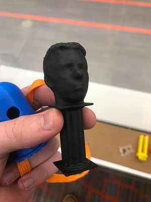
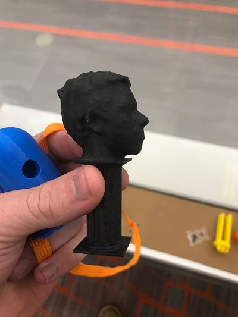

Home
Rotation 5
3D Printing and Scanning
This rotation we began working with 3D priting and scanning. The first project (shown below) is a model of my head placed upon a pedestal. Someone scanned my head
using a device with an Xbox Kinect on it. I then moved the file to my computer and began what would be a tedious learning process. Meshmixer was, by no means, an
that I pulled off of thingiverse.
 